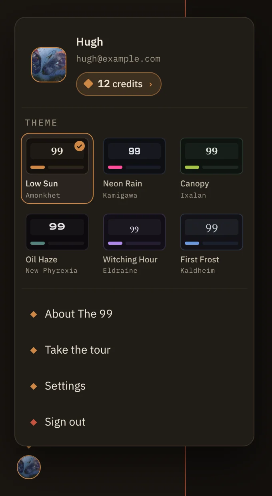
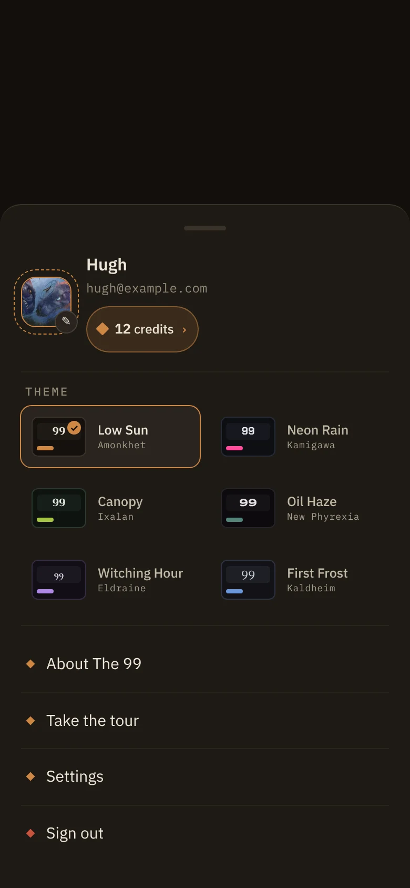
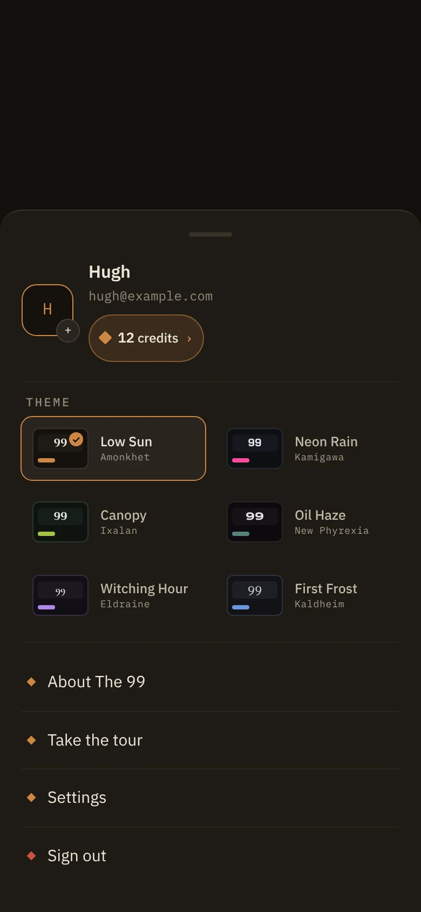
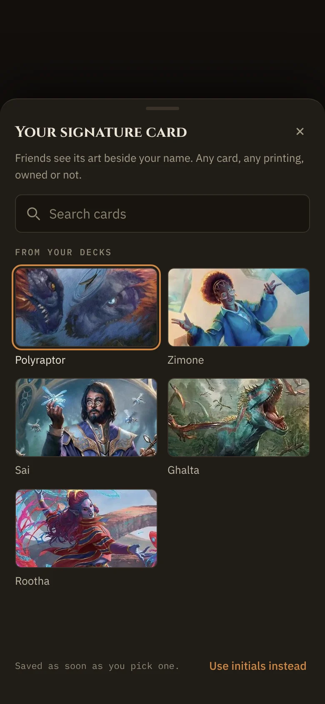
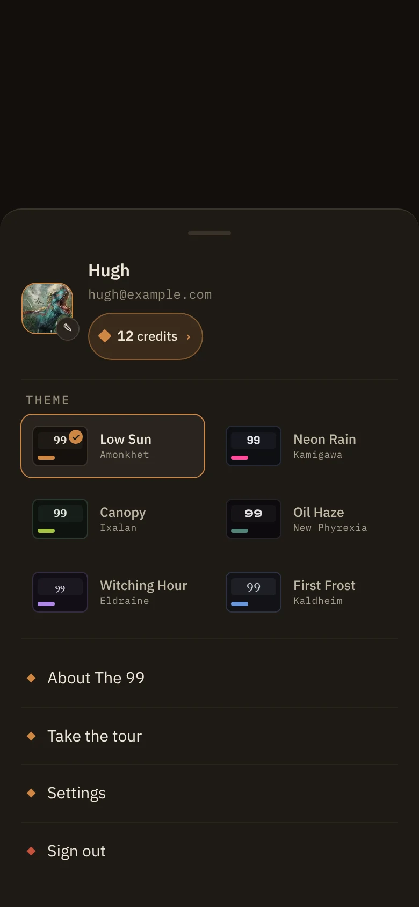
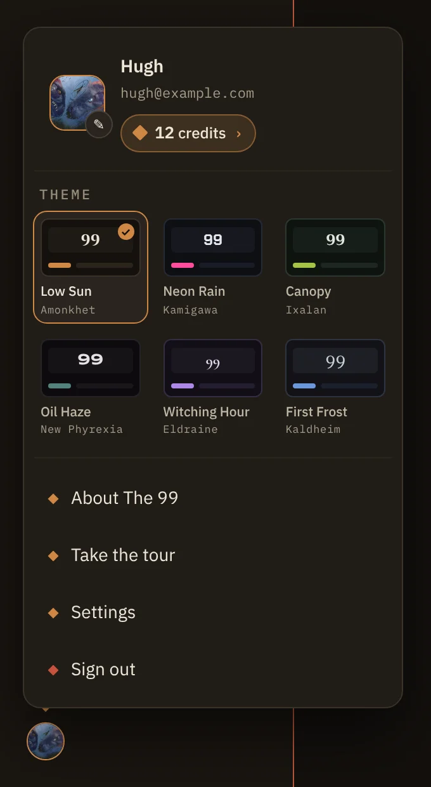
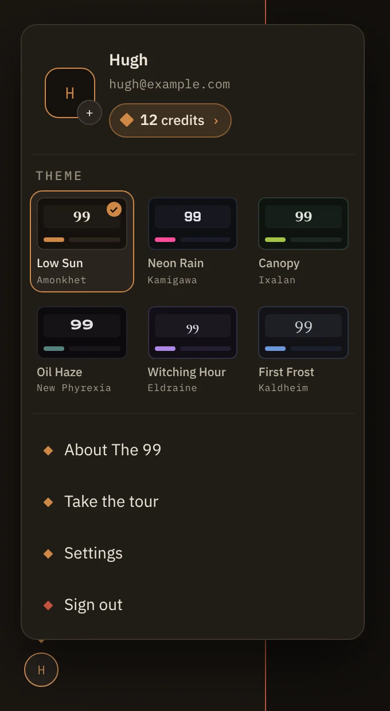
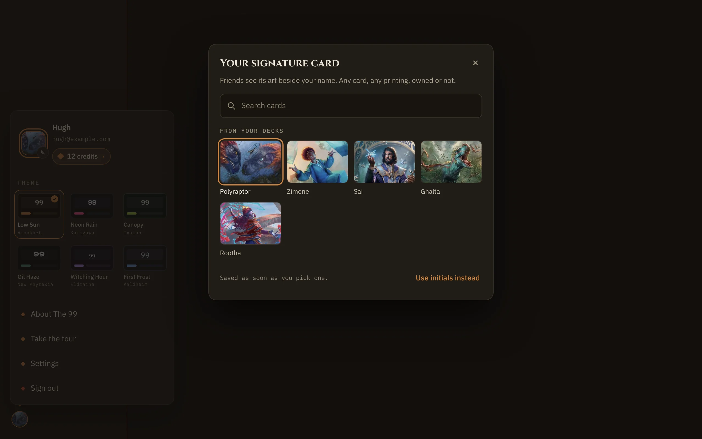
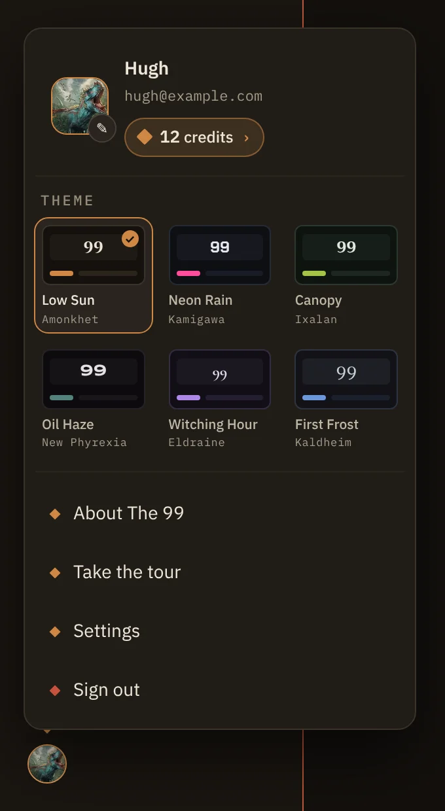

Hugh: Enable avatar editing from the user menu. The call: the face in the menu's head becomes the press, drawn exactly as Friends' head face (✎ badge, or + with no card), and it opens the same shipped picker over the menu. No new menu row (Hugh's rule), no new screen, and Friends keeps its own way in.
Today, for reference
Display-only. The face in the head shows your signature card, but changing it means going to Friends.

The same head at 44px in the rail's popover.
The face is the press (no new menu row)
Friends' face button, brought here. The face gets the same 24px ✎ badge Friends' head draws (friends-head.tsx), and the whole face is the press. Named Your signature card: Polyraptor. Change. The rows below are unchanged.

The only new piece, in the dashed copper outline: the face and its badge.

No signature card: initials, as today, with a + badge in place of ✎. Named Choose your signature card, the shipped string.

The shipped SignaturePicker, unchanged, opens over the menu sheet: search, From your decks, printings, Use initials instead. ✕ goes back to the menu.

Back on the menu with the new face. A pick saves as on Friends; the picker closes once the write lands, and focus returns to the face. The header trigger redraws too.
Desktop, the rail popover

Same badge, 44px face.

Initials and +.

The picker's 520 modal opens over the page and the popover, which stays open under the scrim with the face outlined (Friends' picking outline). ✕ or a save returns to the popover.

The new face in the popover head and on the rail trigger.